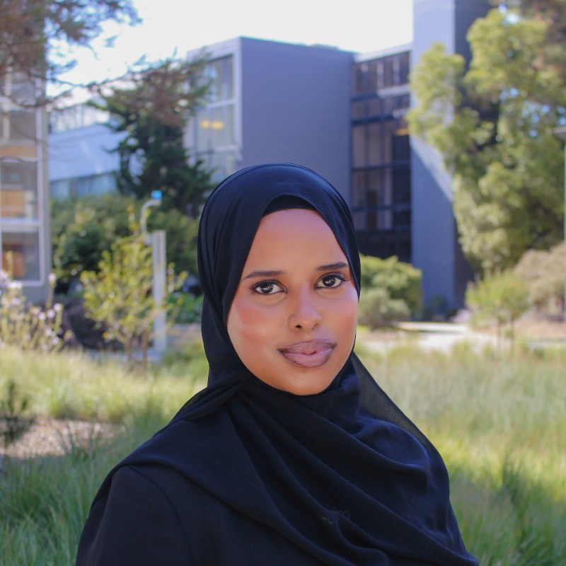

Who am I?

My LinkedInHello, my name is Najah, and I am a fourth-year student at San Francisco State University, where I am studying Computer Science. I have a strong passion for web development and enjoy creating engaging digital experiences. Along with my major, I am pursuing a minor in Marketing because I love combining technology with creativity, especially in areas related to social media and user engagement.
Before focusing on my academic and career goals, I spent time creating content online, which further strengthened my interest in digital media and audience engagement. My goal is to build a career that combines both web development and marketing, allowing me to use my technical and creative skills together. Throughout college, I have worked on various projects that blend these interests and continue to expand my knowledge in both fields.
My journey into technology began in middle school when I attended a summer camp called Kode With Klossy. I participated for two summers, where I learned the fundamentals of programming and even created a mobile game app at the age of 13. Those experiences sparked my passion for coding and showed me what was possible.
In high school, I was fortunate to have a computer science teacher who shared my enthusiasm for programming. With her support, I founded my school's Girls Who Code Club, giving other students the opportunity to explore computer science and build confidence in technology. Through that experience, I realized that my passion for coding, combined with my ability to encourage and connect with others, was something truly meaningful.
That journey has shaped who I am today. It also gave me the opportunity to collaborate with students from Stanford, Brown, Harvard, and NYU on developing a Netflix recommendation application. Working alongside talented students from different backgrounds challenged me to grow as both a developer and a teammate.
After completing that project, I knew without a doubt that technology is the field where I belong. Since then, I have continued pursuing opportunities that allow me to learn, create, and make a meaningful impact through technology.